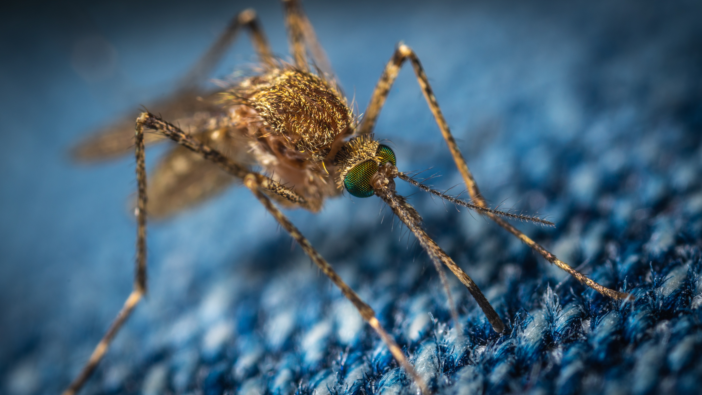

Malaria is a life-threatening disease caused by parasites that are
transmitted to people through the bites of infected female Anopheles
mosquitoes. It is preventable and curable.
The first symptoms fever, headache and chills usually appear 10-15 days
after the infective mosquito bite and may be mild and difficult to
recognize as malaria. Left untreated, P. falciparum malaria can progress
to severe illness and death within a period of 24 hours.
The control and eradication of malaria demands a multifaceted approach. At present we have a range of good tools, including insecticide spraying and long-lasting insecticide-treated bed nets help to prevent the transmission of the infection via the mosquito vector. preventative strategy is 100% effective.The current WHO-recommended first-line treatment for the majority of malaria cases is artemisinin-based combination therapy (ACT). These medicines, in addition to diagnostics, are available to treat and in some cases prevent malaria.